Every feature, explained with screenshots of the app
App version {{VERSIONE}} · guide updated on {{DATA}}
Contents
Part 1 · Getting started
1 · What BothWise is00
2 · Installing and updating the app00
3 · First start and pairing00
Part 2 · Folders
4 · Folders00
5 · Files not to sync00
Part 3 · Syncing
6 · How syncing works00
7 · Sharing a file with BothWise00
Part 4 · Never lose a file
8 · Never lose a file00
Part 5 · Devices and security
9 · More devices00
10 · Security and privacy00
11 · Away from Wi‑Fi: Google Drive or Dropbox00
Part 6 · Appearance and help
12 · Settings00
13 · If something goes wrong00
14 · Contact, reports and support00
15 · What's new, version by version00
This guide describes every feature, one topic per chapter. Read it from the start the first time, then use it for reference.
The Tutorials (another PDF) explain one thing at a time, in a few steps: «how to pair two phones», «how to get a file back»…
§§p1§§
Part 1
Getting started
What BothWise is and what you need
Installing the app and getting updates
Pairing your devices
§§c1§§
1What BothWise is
BothWise keeps folders identical on several Android devices (phones and tablets) that are on the same Wi‑Fi network. Add a photo, a document or a video to a folder on one device and a moment later you find it on the others.
No cloud and no account. Files go directly from one device to another, through nobody's server.
Encrypted connection. Devices talk only if you paired them yourself, with a code you see on your screen.
Never lose files. Whatever is removed or changed elsewhere ends up in the bin or among the previous versions, and you can get it back.
You decide the direction. Each folder can send only, receive only, or both.
What you need
Two or more devices with Android 10 or later, with BothWise installed.
All on the same Wi‑Fi (home, office, workshop) when you want to sync. With Google Drive or Dropbox they also sync from afar (chapter 11).
The main screen
The BothWise Home
At the top: the name of this device and its status («Ready», «2 of 2 reachable»), with the big Sync now button.
Folders: the ones you keep identical, with number of files and size. Tap one for its options. Add folder to choose another.
Bin: files removed on the other devices, recoverable for 30 days.
Latest changes: what recently arrived, changed or was removed. «See all» opens the full list.
Paired devices: your other phones and tablets, with their last contact.
The gear at the top right opens Settings.
§§c2§§
2Installing and updating the app
BothWise for Android is free to download from GitHub, on the page of published versions: github.com/CrsLabs/BothWise/releases. It needs Android 10 or later.
On the phone or tablet open the page and download the BothWise-….apk file of the latest version.
Open the downloaded file. The first time Android asks you to allow installs from the browser (or the Files app): turn the switch on and go back.
Tap Install. Done.
Settings → Updates
Updates arrive by themselves. Once a week BothWise checks on GitHub for a new version. If there is one, it asks «BothWise … is out» with what's new and the buttons Update and Later. With Update the app downloads the new version and Android asks you to confirm: folders, pairings and settings all stay.
In Settings → Updates you can turn the weekly check off or use Check now. The first time Android asks you to allow BothWise to install apps: turn the switch on and go back.
An update installs only if it is signed like the app you have and is exactly the published file (BothWise checks its «fingerprint»). The check only reads from GitHub: none of your data and no file leaves the device.
§§c3§§
3First start and pairing
On first start the Home guides you with the «Getting started» box: first pair another device, then choose the folder to keep identical.
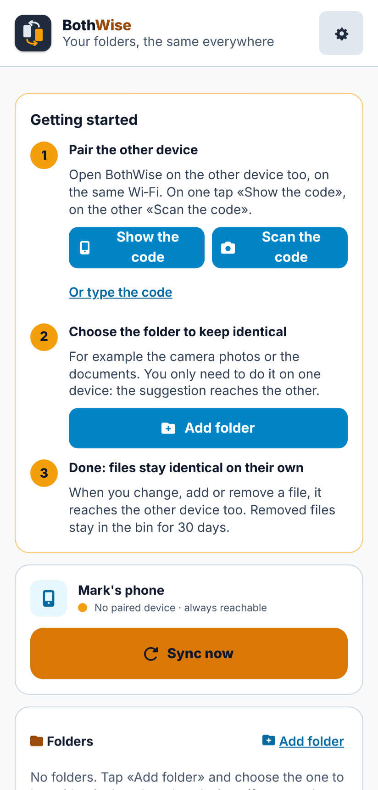
First start
Pairing two devices
Pairing is done once per pair of devices, with both devices on the same Wi‑Fi and BothWise open on both.
On the first device tap «Show the code»: a 20‑character code and a QR appear.
On the second device tap «Scan the code» and point the camera at the QR: pairing starts by itself. If you prefer, tap «Type the code» and type it (the dashes go in by themselves).
When the two devices have recognised each other, the code window closes by itself and you see «Paired».
The code is valid for 10 minutes. After too many wrong attempts pairing switches off by itself, for safety: just use «Show the code» again.
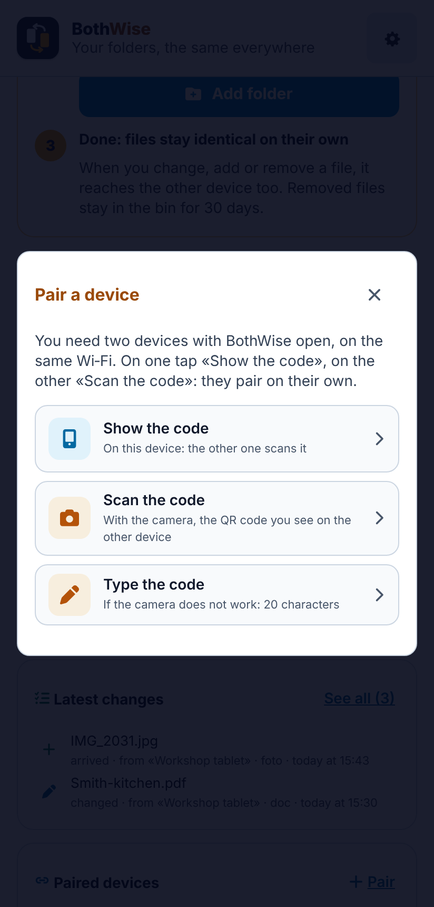
The three «Pair» optionsThe code with its QR
The Pair button (in «Paired devices», or in the «Getting started» box) opens three options: show the code, scan the code, type the code.
After pairing BothWise suggests «Always reachable»: say yes on the device that stays on (a tablet, for example) so it receives changes even when you are not using it.
The camera is used only to read the QR. Permission is asked the first time.
§§p2§§
Part 2
Folders
Adding, receiving and browsing folders
Choosing which way files travel
Leaving out the files you don't need
§§c4§§
4Folders
Adding a folder
Tap Add folder on the Home. Android opens its picker: choose (or create) the folder and tap «Use this folder», then «Allow». BothWise sees only that folder, nothing else.
For the most common cases there are ready‑made folders: «Camera photos» (starts in «Send only» mode), «Documents» and «Download». BothWise explains what to tap before opening the picker.
When another device offers a folder
If you add a folder on another device, the others show a box with a blue border at the top of the Home: «New folder to sync», with its name and who shares it. Choose a folder on this device (even a new, empty one) where the files should arrive, or decline it.
Browsing and managing files
Browse files
Open a folder (tap its name on the Home): «Browse files» shows folders and files with size and date. Tap a folder to go in (the «Back» button at the top left goes up one level and, from the top folder, returns to the folder card; the path at the top works too) and a file to open it with the right Android app.
The gear on each row has the other actions: Open, Share (WhatsApp, email…), Rename, Move (choose the destination folder and tap «Move here») and Delete. What you delete goes to the bin (30 days), on the other devices too after syncing; nothing is ever overwritten. «Add files here» copies files from the phone, «New subfolder» creates a new one (it exists as long as it contains files).
How each folder syncs
A folder's options
Tap a folder to open its options:
Mode
What it does
Send and receive
Changes go both ways. This is the default.
Send only
Changes made here reach the others; changes made elsewhere (deletions too) do not touch this device. Good for the phone's photos.
Receive only
The others' files arrive here, but what you change here stays here.
From here you can also pause the folder, see the files' previous versions or stop syncing it (files stay where they are).
§§c5§§
5Files not to sync
Settings → Files not to sync
Not everything needs copying everywhere. In Settings → Files not to sync you find:
Exclude temporary files (on by default): temporary Word and download files, thumbnails, the Gallery bin.
Personal rules: one rule per line. The * symbol means «any group of letters». Examples:
*.mp4 → all MP4 videos
Drafts/ → the «Drafts» folder
note-*.txt → «note-1.txt», «note-2.txt»…
An excluded file stays where it is: it is not copied to the other devices and, if you remove it, it is not removed elsewhere. Rules apply to all folders.
§§p3§§
Part 3
Syncing
When and how syncing happens
Hours, speed, large files, trusted networks
Sending and receiving single files
§§c6§§
6How syncing works
It's automatic
BothWise notices by itself when a folder changes (a photo taken, a document saved) and, if the other devices are reachable, sends the news straight away. You don't need to do anything.
«Sync now»
The big orange button looks for the other devices and brings them up to date at once. The status under the name says how many it reached («1 of 2 reachable»). A device that is off, far away or on another Wi‑Fi simply doesn't answer: that's not an error.
«When to sync»
In Settings → Syncing choose when BothWise starts by itself: «Always» (as soon as something changes), «Every hour» (at most once an hour, to save battery) or «Only at set hours»: write days and hours (for example «mon-fri 18:00-23:00») and outside those hours it waits. The «Sync now» button always works.
Maximum speed
Also in Syncing you can limit the sending speed (5, 2 or 1 MB per second) so large files don't clog your home Wi‑Fi. The limit applies to what this device sends and changes without interrupting transfers.
«Always reachable»
Normally a device receives only while BothWise is open. With «Always reachable» (Settings → This device) it keeps listening even with the screen off, during hours you choose (for example mon–fri 8–18). A permanent notification appears. Useful for tablets and phones left on a desk.
A file arriving, with «Cancel the transfer»
While files travel
When a file arrives (or leaves) a progress bar appears: file name, «3 of 5 files», megabytes and speed. The sender sees «Sending …», the receiver «… is arriving».
«Cancel the transfer» (on either device) stops incoming and outgoing files. Files that already arrived stay; syncing starts again by itself after 15 minutes, or at once with «Sync now».
Very large files
To save battery, by default files over 50 MB travel only with the phone charging and on Wi‑Fi. If they are waiting, the Home shows «N files are waiting». You can change the limit in Settings → Syncing (50 MB, 200 MB or «Always all»).
Battery. BothWise doesn't keep Wi‑Fi at full power: it checks folders every few minutes while you use it and every 15 minutes with the screen off, plus the signals Android sends when something changes.
§§c7§§
7Sharing a file with BothWise
Receive files, like AirDrop
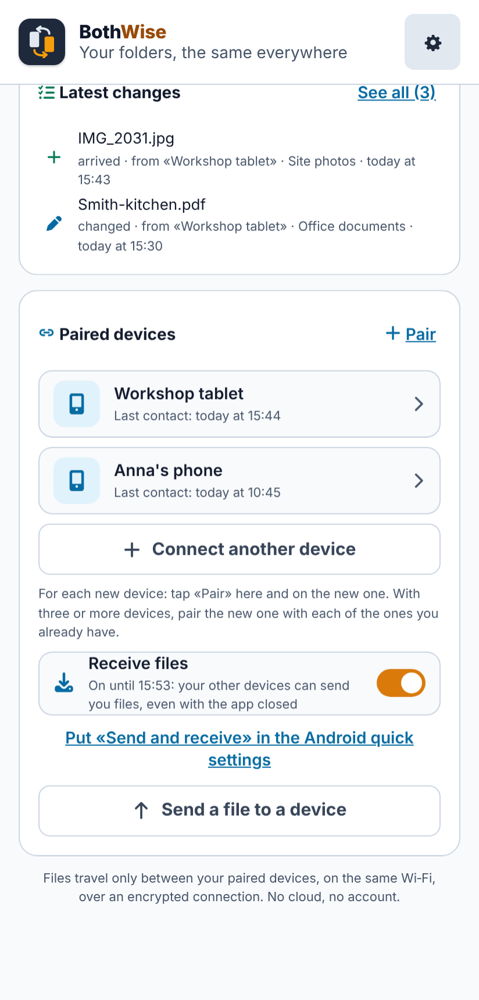
The «Receive files» switch
On the Home, under «Paired devices», the «Receive files» switch opens reception for 10 minutes: during that time your paired devices can send you files even with BothWise closed (a notification with «Turn off» appears). Then it switches off by itself. Only paired devices can send.
To always have it at hand, tap «Put Send and receive in the Android quick settings»: the button appears next to Wi‑Fi and torch. One tap turns reception on and opens the «Send and receive» panel: there you turn reception off or choose a device and send it a file. When a file arrives you get a notification; you find it in «Received files».
Sending a file to one device only
On the Home, under «Paired devices», «Send a file to a device» sends one or more files only to the device you choose (with BothWise open, on the same Wi‑Fi), without putting them in any synced folder. The other device shows «received from…» and, on the Home, «Received files»: tap Save to put them where you want, or delete them.
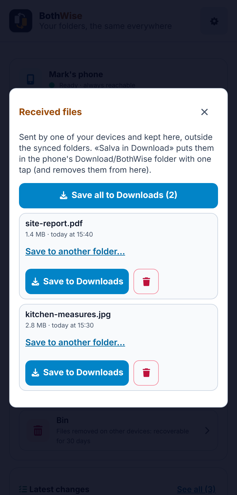
Received files
Files sent to you with «Send a file» stay here, outside the synced folders, until you save or delete them. «Save to Downloads» puts them in the phone's Download/BothWise folder with one tap (with several files there's «Save all to Downloads»); «Save to another folder…» lets you choose where.
From the Android Share menu
From another app (Gallery, Files, WhatsApp…) you can send a file to a synced folder without opening BothWise:
In the other app tap Share and choose BothWise.
BothWise asks where to save: choose one of your folders. Files go into the «Shared» subfolder.
A window with a progress bar appears («2 of 5 · 40%») and the «Cancel the copy» button.
When copying is done a green message appears, and the files travel to the other devices too.
If you don't have a folder yet, BothWise tells you to add one. If you cancel, the files already copied stay in «Shared».
§§p4§§
Part 4
Never lose a file
Bin and previous versions
Confirmations before deleting and automatic protections
Two versions of the same file
§§c8§§
8Never lose a file
It's BothWise's number one rule: if something is removed or replaced by another device, you can get it back.
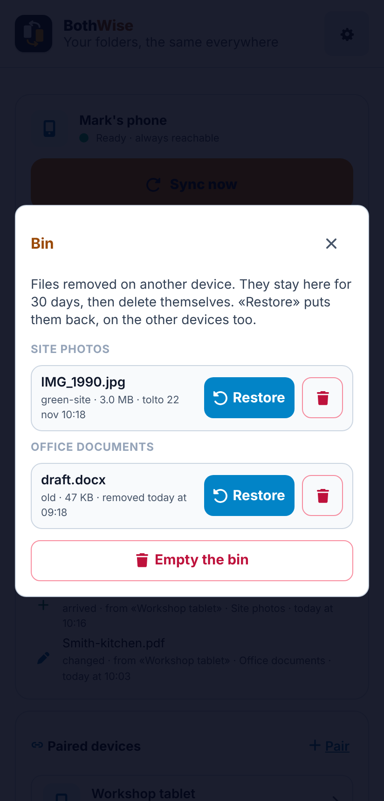
The BinPrevious versions
The bin
Files removed on another device don't disappear: they go to the Bin (from the Home, or Settings → Security and data) for 30 days. Restore puts them back, on the other devices too. If a file with the same name is already in their place, the recovered one arrives next to it as «name (restored)»: nothing is ever overwritten.
Previous versions
When a file is changed by another device, BothWise also keeps how it was before, for 30 days (you can turn this off in Settings). From the folder's options → Previous versions you bring a document back to how it was, with a confirmation.
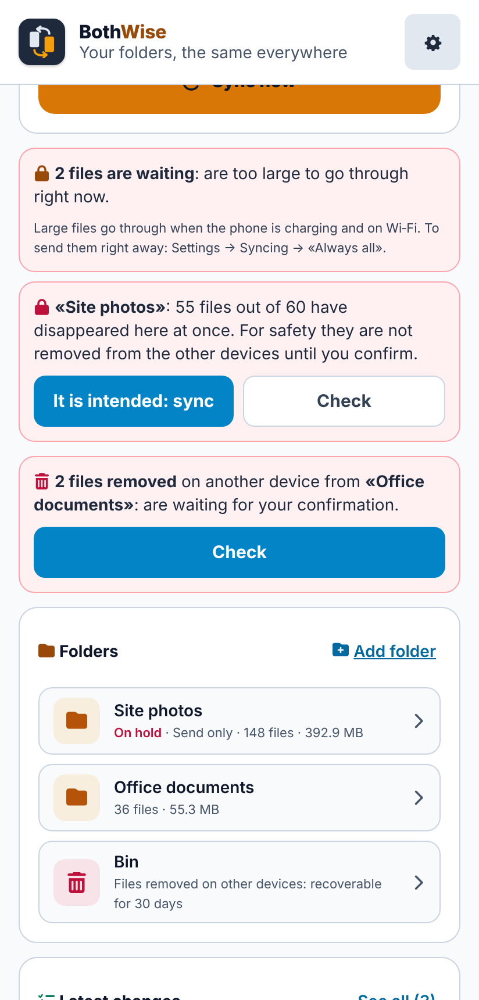
Protection messages on the Home
Ask before deleting
By default deletions coming from elsewhere go straight to the bin. With «Ask before deleting» on (Settings → Security and data) files removed elsewhere stay until you decide: on the Home tap Check and for each file choose «Remove» (goes to the bin) or «Keep» (stays and returns to the other device too). A file you changed here in the meantime always stays.
Automatic protections
Mass deletions: if a great many files disappear at once, BothWise stops and asks «It is intended: sync» before removing them from the others. A folder emptied by mistake doesn't empty the others.
Folder not found: if the memory card was removed or the folder moved, you see «can no longer be found» with «Choose the folder again», and nothing is removed from the other devices.
Permission removed: if Android revoked the permission on the folder, you see «Give permission again».
Conflicts
If the same file is changed in two places before they synced, both are kept: one with the original name and the other with «conflict» in its name.
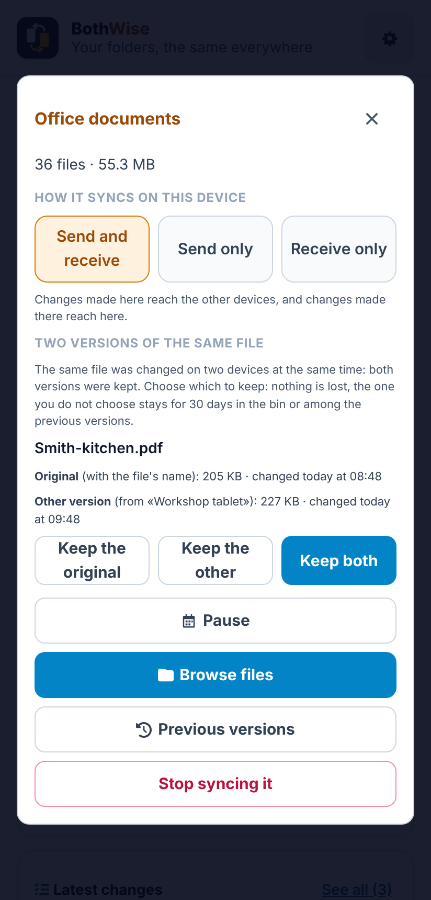
Two versions of the same file
Choosing which to keep
Open the folder (tap its name on the Home) and you find «Two versions of the same file»: for each file you see size and date of the original and of the other version (with the name of the device that made it), and you choose «Keep the original», «Keep the other» or «Keep both». Nothing is lost: the one you don't choose stays 30 days in the bin or among the previous versions.
§§p5§§
Part 5
Devices and security
Adding, pausing and forgetting a device
How BothWise protects your files
Away from Wi‑Fi with Google Drive or Dropbox
§§c9§§
9More devices
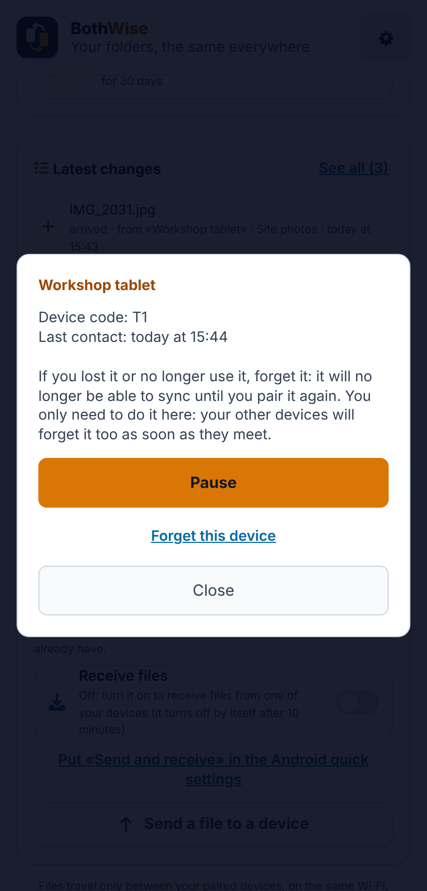
A device's options
Adding a device
Tap «Connect another device» under the list of devices and repeat the pairing steps. With three or more devices you only need to pair the new one with one of those you already have: the others learn about it by themselves within seconds and you see «… added: introduced by …».
If a device goes quiet
Its row shows the last contact. After more than a day an orange note appears: off, far away, or no longer in use. Tap it for the options.
Pause and «Forget»
Pause: for an hour, a day or until you resume: nothing is exchanged with that device (or in that folder), neither sending nor receiving.
Forget this device: for a lost or sold device. It can no longer sync until you pair it again. Doing it on one of your devices is enough: the others forget it as soon as they meet. The app also reminds you of the two things to do outside BothWise: remove your Google account from it and lock it remotely.
Pair only your own devices. A paired device can change and remove files in the shared folders (bin, versions and protections limit the damage) and can introduce others.
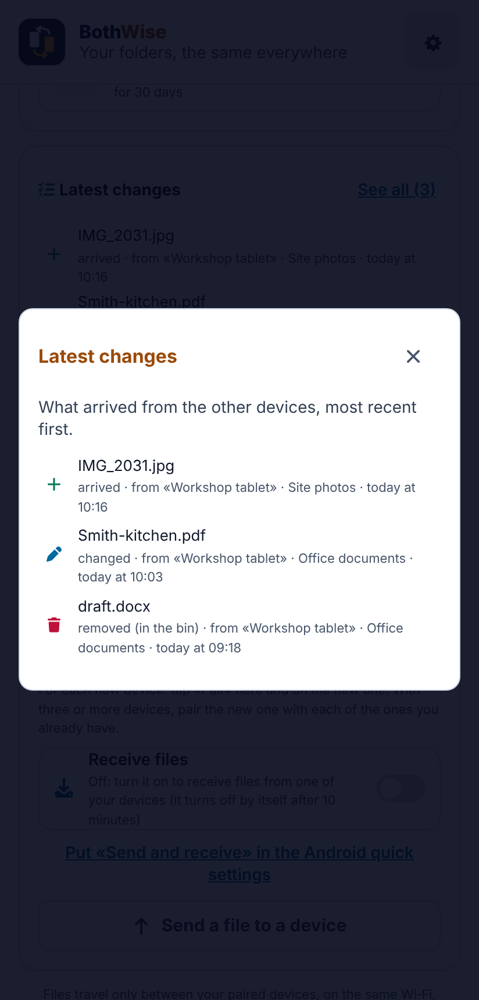
Latest changes
Latest changes
The Home shows the two most recent; «See all» opens the full list: what arrived, changed or was removed, from which device and in which folder.
§§c10§§
10Security and privacy
Settings → Security and data
No server, no account. BothWise has no cloud of its own and collects nothing about you. No ads, no tracking.
Encrypted connection. Devices talk over TLS 1.3 and only if paired. An unknown device is refused.
Fingerprint lock. On opening and every time you return to the app, BothWise asks for your fingerprint (or the phone's PIN/pattern). Recent apps don't show the content. The lock doesn't trigger when you pick a file or scan the QR from the app itself, nor with the notification shade or two apps side by side.
It only sees the folders you choose. Android gives BothWise permission on those folders only.
No traces. App data doesn't end up in Android's automatic backups. «Erase everything from this device» removes pairings, keys and settings and gives the permissions back; your folders and files stay.
Security keys are kept by Android in a protected store and never leave the device.
§§c11§§
11Away from Wi‑Fi: Google Drive or Dropbox
On the same Wi‑Fi devices talk directly. When they are far apart (one at home, one on site using mobile data), BothWise can use your Google Drive or your Dropbox as a locked mailbox: each device leaves its encrypted changes there and the others pick them up as soon as they can.
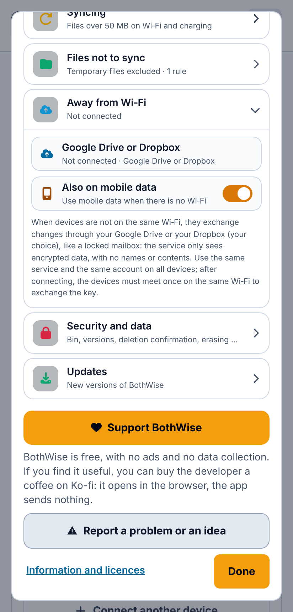
Settings → Away from Wi‑FiChoose the service
Connecting the service
Settings → Away from Wi‑Fi → Google Drive or Dropbox.
Choose Google Drive or Dropbox: the browser opens.
Sign in to your account and tap Allow: you return to BothWise by yourself, which says «… connected».
Do the same on all devices, with the same service and the same account.
The first time the devices must meet once on the same Wi‑Fi: they exchange the mailbox key. From then on it works from afar too.
What the service sees: only encrypted data, with no file names or contents. The key stays on your devices.
What BothWise sees of your account: on Google Drive only the files it creates (the «BothWise - casella cifrata» folder); on Dropbox only its app folder. It doesn't see your other files.
Also on mobile data: when on, the mailbox works with the phone's data too; when off, only on Wi‑Fi.
Tapping the item again shows its status (last exchange) and lets you Disconnect the service, optionally deleting the mailbox from your account.
Use one service for all devices: if one is connected to Drive and another to Dropbox, they won't find each other from afar. On the same Wi‑Fi they always talk directly.
§§p6§§
Part 6
Appearance and help
All the settings
What to do when something goes wrong
Writing to us and supporting BothWise
What's new in each version
§§c12§§
12Settings
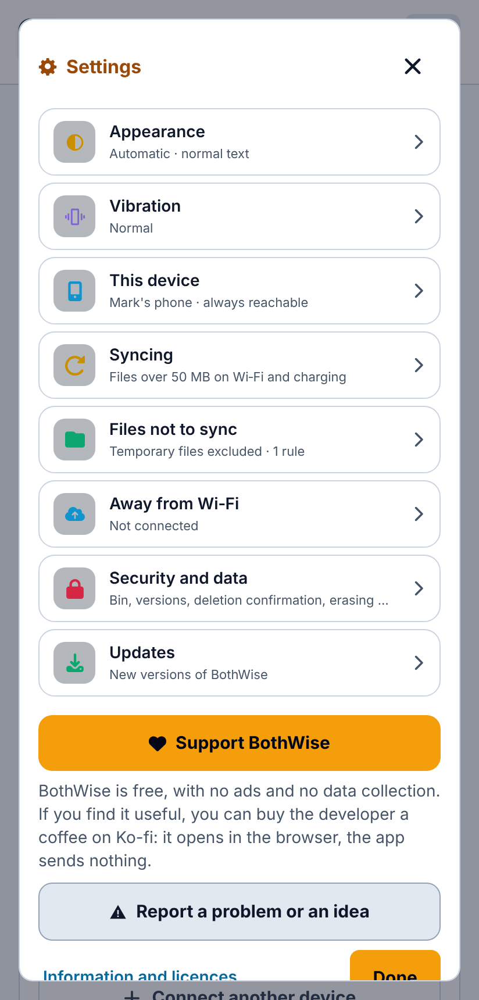
Settings (list)Appearance
They open from the gear at the top right. Each item opens with a tap; tapping outside the window (or «Done») closes it.
Appearance: light, dark or automatic theme; animations (can be turned off); language (automatic, Italiano or English); text size (normal, large, very large); screen smoothness (automatic, maximum 90/120 Hz, 60 Hz to save battery).
Vibration: on/off, strength (light, normal, strong) and when to vibrate (buttons, successful operations, alerts).
This device: the name the others see, «Always reachable» with its hours, notifications.
Syncing: when to sync, maximum speed, large‑file limit, trusted Wi‑Fi networks, notifications.
Files not to sync: rules (see chapter 5).
Away from Wi‑Fi: Google Drive or Dropbox, «Also on mobile data» (chapter 11).
At the bottom: Support BothWise, Report a problem or an idea and Information and licences (chapter 14).
This deviceSyncing
Trusted networks
If you choose trusted Wi‑Fi networks (for example «Home» and «Workshop»), BothWise syncs only there and not on guest or public Wi‑Fi. To read the network's name Android asks for location permission (used only for this).
Reporting a problem
«Report a problem or an idea» prepares a message with your description and, if you want, technical information (version, phone, how the last sync went). It doesn't contain your files or your folder names. You send it yourself with your email app.
§§c13§§
13If something goes wrong
What happens
What to do
«Nobody reachable»
Check that the devices are on the same Wi‑Fi (not the guest one) and that BothWise is open, or «Always reachable» is on on the other device. Tap «Sync now».
A large file doesn't arrive
By default files over 50 MB travel only with the phone charging and on Wi‑Fi. Look for «N files are waiting» on the Home; plug in, or choose «Always all».
A file disappeared from a device
Look in the Bin: if it was removed by another device, you find it there and can Restore it.
«… can no longer be found»
A folder was moved or the memory card removed. Put it back, or «Choose the folder again». Nothing is removed from the other devices.
«Give permission again»
Android removed the permission on the folder. Tap it and choose the folder again.
«N files have disappeared here»
If it's intended, tap «It is intended: sync»; otherwise «Check» and recover the files first.
An excluded file arrives anyway
Check the rule (one per line, e.g. *.mp4) and try with a new file, not one already synced before the rule.
The pairing code doesn't work
Make sure you chose «Show the code» on the first device and typed it within 10 minutes; both devices must be on the same Wi‑Fi with BothWise open.
Nothing arrives from afar
Check that all devices are connected to the same service with the same account (Settings → Away from Wi‑Fi) and met at least once on the same Wi‑Fi. On mobile data, «Also on mobile data» must be on.
It doesn't find updates
It needs internet. In Settings → Updates tap «Check now»: the message says how it went. If Android asks for permission to install apps, turn it on and go back.
Something else
Settings → Report a problem or an idea, leave «Add technical information» on and describe what happened.
§§c14§§
14Contact, reports and support
At the bottom of Settings
Report a problem or an idea
At the bottom of Settings tap Report a problem or an idea.
Choose A problem or An idea and describe it in a few words. Leave «Add technical information» on: it helps us understand (it never contains your files or folder names).
Tap Send by email: your email app opens with the message ready for crslabs.info@gmail.com. It leaves only when you send it.
Support BothWise
BothWise is free, with no ads and no data collection. If you find it useful, the Support BothWise button opens ko-fi.com/crslabs in the browser, where you can buy the developer a coffee. The app sends nothing.
Information and licences
App version, developer (CrsLabs), contacts and licences of the components used. BothWise is free software (GNU GPL 3.0): the code is at github.com/CrsLabs/BothWise.
§§c15§§
15What's new, version by version
A row is added with each new version.
Version
What's new
0.9.7
Folders with many files: browsing is much faster, with search, sorting (name, most recent, largest), «To the top» / «To the bottom» and «Show more». The large-files notice closes with the X and disappears when you remove the limit. Windows and menus close smoothly.
0.9.4
Away from Wi‑Fi, «Nobody reachable» no longer appears under the device name: it reads «synced through Google Drive» (or Dropbox) with the time, green dot.
0.9.5
The folder file list has a «Back» button: it goes up one level and, from the top folder, returns to the folder card. The phone's Back button does the same.
0.9.3
Away from Wi‑Fi, with the app open, the mailbox is checked every minute: changes and forgotten devices arrive by themselves; «Disconnect and delete» tells you if the folder stays in the Drive; smoother Settings.
0.9.2
Choice of screen smoothness (automatic, maximum, 60 Hz); Settings like DoctorCar (Appearance in the same order, the same Updates section at the bottom); BothWise is free software (GPL 3.0).
0.9.1
Away from Wi‑Fi active: distant devices exchange changes through your Google Drive or your Dropbox, encrypted.
0.9.0
Automatic updates from GitHub (checked once a week, «Check now», can be turned off); guide and tutorials in six parts, with page numbers in the contents.
0.8.13–0.8.16
Bottom of Settings like the other CrsLabs apps (Support BothWise and Report, to crslabs.info@gmail.com); the theme changes in one go and follows the phone's; status bar readable with the light theme; information in the name of CrsLabs.
0.8.2
Adding files with a name already used: the app asks whether to keep both (the new one gets a number, and it tells you) or replace (the old one stays among the versions); after resolving two versions of the same file a window says what happened.
0.8.1
Saving received files with one tap («Save to Downloads»); Back inside folders goes up one level; renaming a folder doesn't leave the old one; a name already used (even with different capitals) is refused with a message; «Cancel the transfer» also works for the receiver.
0.8.0
Browse files of a folder from the app (open, share, rename, move, delete, add files, new subfolder); «Receive files» like AirDrop, with a switch on the Home and a button in the Android quick settings.
0.7.0
When to sync (always, every hour, only at set hours); maximum sending speed; two versions of the same file: choose which to keep in the app; «Send a file to a device» and «Received files»; English (Settings → Appearance → Language).
0.6.6
«Cancel the transfer» and «Cancel the copy»; progress bar for the sender too; the large‑file limit changes without interrupting transfers; exclusion rules also apply to files already known.
0.6.5
Lower battery use (no Wi‑Fi locks, fewer checks with the screen off); the fingerprint is asked when you really leave the app, not with the notification shade.
0.6.4
Keyboard above windows fixed; the sharing progress bar also moves during a send.
0.6.3
More devices introduce themselves; notifications can be swiped away; windows close the way they open.
0.6.2
Progress bar for shared files; shorter «Latest changes»; «Connect another device»; faster QR reading; screen at the highest refresh rate.
0.6.0
Away from Wi‑Fi with Google Drive or Dropbox (ready, to be activated); vibration on every button.
0.5.x
Opening with the logo; fingerprint lock; security checks.
0.4.0
Protections, recognised moves, QR pairing, notifications, conditions for large files, ready‑made folders, «Share with BothWise», pause.
BothWise is built on PairWood, the sync engine written from scratch together with the CrsLabs apps.